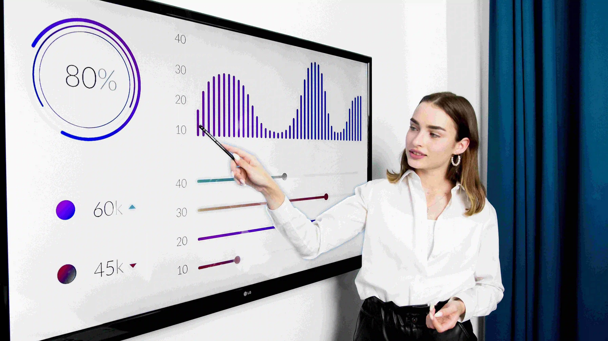
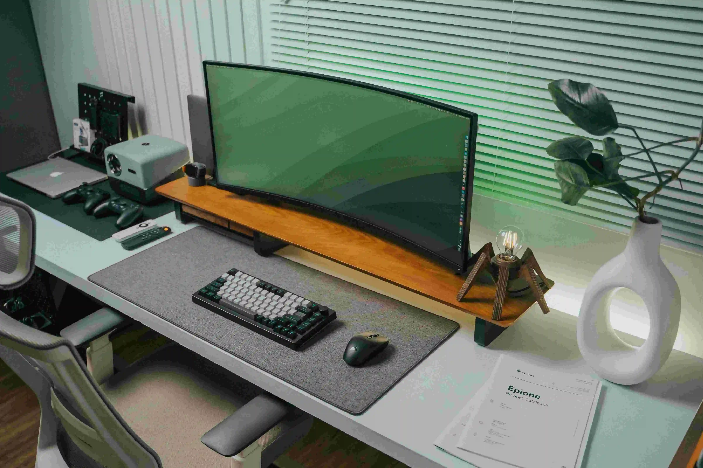

Table of Content
- Basic Concept of Pipelining
- Pipeline Stages and Throughput
- Types of Pipelining
- Pipeline Hazards
- Techniques to Mitigate Hazards
- Superscalar & Super pipelined Architectures
- Dynamic Pipelining
- Pipeline Depth and Performance
- Impact on Modern CPUs
- Conclusion
- Frequently Asked Questions
Computer Achitecture Pipelining
Computer architecture pipelining is a key technique in computer architecture that aims to enhance the performance of a Central Processing Unit by overlapping the execution of multiple instructions. This concept is inspired by assembly lines in manufacturing. where different stages of production are carried out simultaneously. Here’s a complete and detailed look at pipelining in computer architecture.
Basic Concept of Pipelining
Definition: computer architecture pipelining divides the process of executing instructions into discrete stages, allowing multiple instructions to be processed simultaneously at different stages of their execution. The typical stages in a pipeline include here
i)IF or Instruction Fetch is fetching the information instruction from computer memory.
ii)Instruction Decode (ID): Decoding the instruction and reading registers.
iii)Execution (EX): Executing is the operation or execution the arithmetic or logic operation.
iv)Memory Access (MEM): Accessing memory if required (for load or store operations).
v)Write Back (WB): Writing the result back to the register file.
Pipeline Stages and Throughput
Throughput: Throughput mentions to the number of data instructions that can be data completed in a given time period. computer architecture pipelining aims to increase throughput by allowing multiple instructions to be in different stages of execution concurrently.
Latency: Latency is the time taken for a single instruction data to pass through every stages of the pipeline. While pipelining reduces latency per instruction by overlapping stages, the overall latency per instruction is still the sum of the latencies of each stage.

Types of Pipelining
Instruction Pipeline is the most common type of pipeline. where different stages of information instruction processing overlap.
Arithmetic Pipeline Used in floating point units and some complex arithmetic operations. where different stages of computation are pipelined.
Data Pipeline Refers to the pipelining of data processing stages in vector processors or specialized hardware.
Pipeline Hazards
computer architecture pipelining introduces several challenges, known as hazards that can affect the performance.
Data Hazards
RAW (Read After Write): When an instruction needs data that has not yet been written by a previous instruction.
Write After Read or WAR : When an instruction data writes to a register that a previous instruction data is reading from.
WAW (Write After Write): When two instructions write to the same register.
Control Hazards
Get up from branch instructions that alter the flow of control. When a branch is taken, the pipeline may have to discard or flush instructions that were fetched based on the wrong path.
Structural Hazards
Occur when hardware resources are insufficient to support all concurrent operations. Example, if both instruction fetch & data access require the same memory then a structural hazard occurs.
Techniques to Mitigate Hazards
Data Forwarding (Bypassing): Passes the result of one instruction directly to a subsequent instruction that needs it, bypassing intermediate stages.
Branch Prediction: Uses algorithms to predict the outcome of branch orders & continue fetching instructions along the predicted path.
Branch Delay Slots: Inserts instructions that can execute regardless of the branch outcome, effectively using the delay slots to avoid stalling.
Out of Order Execution: Allows instructions to be executed as soon as their operands are ready, rather than strictly following the program order.
Superscalar & Super pipelined Architectures
Superscalar Architecture: Extends pipelining by allowing multiple instructions to be issued and executed in parallel during each clock cycle. Superscalar processors have multiple pipelines ex- multiple ALUs, FPUs to increase throughput.
Super pipelined Architecture: Breaks each pipeline stage into smaller sub stages and increasing the number of stages & reducing the time per stage. This method aims to achieve higher clock speeds by increasing the number of stages in the pipeline.
Dynamic Pipelining
Dynamic Scheduling: computer architecture pipelining uses hardware techniques to dynamically schedule instructions based on their readiness & information dependencies, such as Tomasulo's algorithm.
Speculative Execution: Executes instructions before it is known whether they are needed, based on predictions & discards results if the predictions turn out to be incorrect.

Pipeline Depth and Performance
Pipeline Depth is Refers to the number of stages in the pipeline. computer architecture pipelining can potentially increase clock speeds but also introduce more complexity and higher costs due to increased hazard management.
Performance Trade-offs: While pipelining increases throughput, it also introduces overhead for managing hazards & stalls. The efficiency of pipelining depends on balancing these trade-offs and optimizing the pipeline design for the specific workload.
Impact on Modern CPUs
Modern Processors: Contemporary CPUs use advanced pipelining techniques in conjunction with other features like multiple cores, hyper-threading & integrated memory controllers to maximize performance.
Pipeline Design: Modern CPUs often have very deep pipelines & sophisticated techniques for branch prediction and out-of-order execution to minimize stalls and maximize instruction throughput.
Conclusion
computer architecture pipelining is a fundamental technique in modern computer architecture that improves Central Processing Unit performance by allowing overlapping execution of instructions. While it introduces challenges such as hazards & stalls, various techniques & architectural innovations help mitigate these issues and making pipelining a critical element in achieving high performance processors.
Frequently Asked Questions
What is pipelining in computer architecture
computer architecture pipelining is a key technique in computer architecture that aims to enhance the performance of a Central Processing Unit by overlapping the execution of multiple instructions.
What are the 5 pipeline stages in computer architecture?
i)IF or Instruction Fetch is fetching the information instruction from computer memory.
ii)Instruction Decode (ID): Decoding the instruction and reading registers.
iii)Execution (EX): Executing is the operation or execution the arithmetic or logic operation.
iv)Memory Access (MEM): Accessing memory if required (for load or store operations).
v)Write Back (WB): Writing the result back to the register file.
Recent Post
- Difference between narrow ai and general ai
- How AI is used in agriculture
- Janitor AI full details in depth with example
- What is the primary advantage of using generative ai in content creation
- ChatGPT features list, JBot, limitations, and benefits for you.
- The importance of computer networking & advantages of network